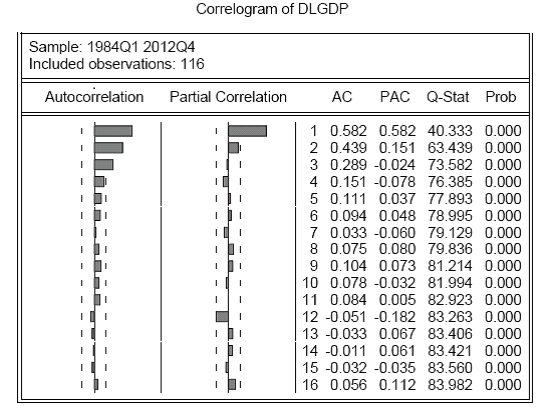
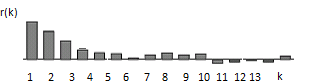
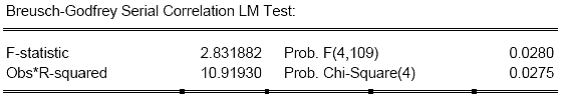
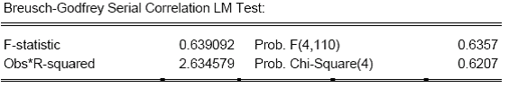

A correlogram plots sample autocorrelations against the lag. It is the practical tool used to move from the definitions of autocorrelation and white noise to real data analysis: we use it to see dependence, test whether a series is white noise, and guide ARMA model choice.
Using correlograms in a module or dissertation?
Send the output, module topic list and the question you are trying to answer. The diagnostic can focus on ACF, Ljung-Box tests and model checking.
Where the correlogram fits
The first note defined the population autocorrelation \(ρ(k)\). In real data we do not observe the population process directly, so we estimate autocorrelations from the sample. The correlogram collects these sample autocorrelations in one table and graph.
The TeX notes emphasise two roles. First, the correlogram is visual: it shows the pattern of dependence. Second, it is inferential: it gives test statistics and p-values for whether autocorrelations are statistically different from zero.
1. Population ACF versus sample ACF
The population ACF is a property of the true process. It tells us the true correlation between \(Y_t\) and \(Y_{t-k}\). The sample ACF is computed from observed data and is only an estimate.
Sample autocorrelation: the sample estimate of \(ρ(k)\), usually written \(r(k)\), computed using the observed data at lag \(k\).
The notes make the same point as in ordinary statistics. A sample mean estimates a population mean, but it is not exactly equal to it. In the same way, \(r(k)\) estimates \(ρ(k)\), but differs because of sampling variation.
Intuitively, the larger the sample, the closer the sample autocorrelation should be to the true autocorrelation. But they need not be identical, just as a sample variance need not exactly equal a population variance.
2. What a correlogram shows
A correlogram is the sample ACF plotted against the lag. In EViews-style output it usually also includes standard errors, Q-statistics and p-values.

A correlogram displays sample autocorrelations by lag and often includes formal white-noise tests.| Part of output | What it means | How to use it |
|---|---|---|
| Lag | How far back the comparison goes. | Lag 1 compares adjacent observations; lag 4 compares observations four periods apart. |
| AC | Sample autocorrelation at that lag. | Large positive or negative values suggest dependence. |
| PAC | Partial autocorrelation. | Useful for AR order choice, though the notes focus mainly on ACF and diagnostics. |
| Q-statistic | A joint test up to that lag. | Tests whether autocorrelations up to lag \(k\) are jointly zero. |
| Probability | p-value for the Q-test. | Small values indicate evidence against white noise. |
3. Testing individual autocorrelations
The notes use a large-sample result for the sample autocorrelation under white noise. If the true process is white noise, then the true autocorrelations are zero at all positive lags. For a large sample, the sample autocorrelation should therefore be close to zero.
This leads to a simple test:
The correlogram often draws approximate confidence bands around zero. If a sample autocorrelation lies outside the band, that lag is treated as individually statistically significant.
If the process truly has no memory, sample autocorrelations should bounce around zero. A large spike suggests that the observed data contain more dependence than white noise would normally generate.
4. The Q-test: testing several lags at once
Looking at one lag at a time is useful, but we often want to test whether the process is white noise up to a whole group of lags. That is the role of the Q-test.
Under the null, the Q-statistic is compared with a chi-squared critical value. If the Q-statistic is too large, or the p-value is small, we reject the claim that the series is white noise up to that lag.
 The Q-test compares the statistic to a chi-squared reference distribution.
The Q-test compares the statistic to a chi-squared reference distribution.In applied work you normally do not calculate this by hand. EViews, R, Python or Stata reports the statistic. The important skill is to interpret it correctly.
5. Example: GDP growth correlogram
The notes use UK GDP growth as an example. The correlogram shows clear evidence of positive serial correlation at the early lags. The pattern declines rather than cutting off immediately.
The interpretation is:
- GDP growth is not behaving like white noise.
- There is dependence through time.
- The declining pattern is more suggestive of an autoregressive structure than a pure short-memory MA process.
- The correlogram suggests possible models, but does not itself estimate the final model.

The notes use the correlogram to connect sample autocorrelation evidence to model choice.6. Correlograms after estimation: checking residual serial correlation
The same logic is used after estimating a model. If the model has captured the time dependence properly, the residuals should behave like white noise. If the residual correlogram still shows significant autocorrelation, the model has left dependence unexplained.
This is why residual serial correlation matters. In a regression or ARMA model, serially correlated residuals indicate that the assumed error process is wrong. The notes then introduce diagnostic tests that are essentially asking whether the residuals still contain AR-type dependence.

Residual diagnostics ask whether dependence remains after fitting a model.
If residuals are still serially correlated, the model specification may need to change.7. From correlogram to model choice
The notes stress that the correlogram is a guide, not the whole model-selection procedure. Historically, ARMA specification often began by matching the sample correlogram to theoretical ACF patterns:
| Pattern in correlogram | Possible interpretation | Next note |
|---|---|---|
| ACF cuts off quickly after lag \(q\) | Possible MA(q) process. | MA(q) |
| ACF declines gradually | Possible AR process. | AR(1) |
| ACF declines but with more complicated shape | Possible ARMA process. | ARMA(1,1) |
| Seasonal spikes | Possible seasonal structure. | seasonality |
The next step is estimation, diagnostic testing and information criteria such as AIC and SIC, discussed in the advanced note.
Next notes in this pathway
- AR, MA and ARMA processes: the theoretical patterns behind correlogram interpretation.
- Estimation and model selection: AR estimation, MA intuition, AIC and SIC.
- Seasonality: when the correlogram shows regular seasonal spikes.
Correlogram help
For help interpreting correlograms, Q-tests, ARMA diagnostics or applied EViews/R/Python output, see econometrics tuition or financial econometrics tuition.
Companion videos: the Time Series Econometrics playlist on @economaths walks through the ACF and correlogram.